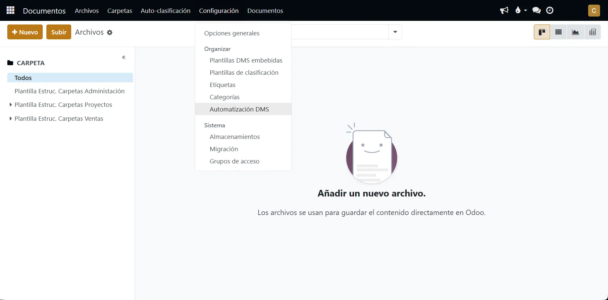
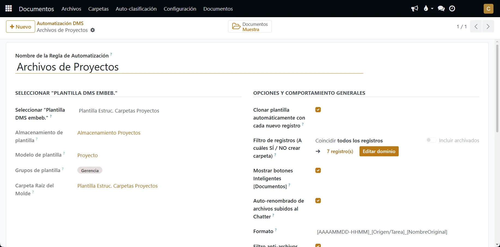
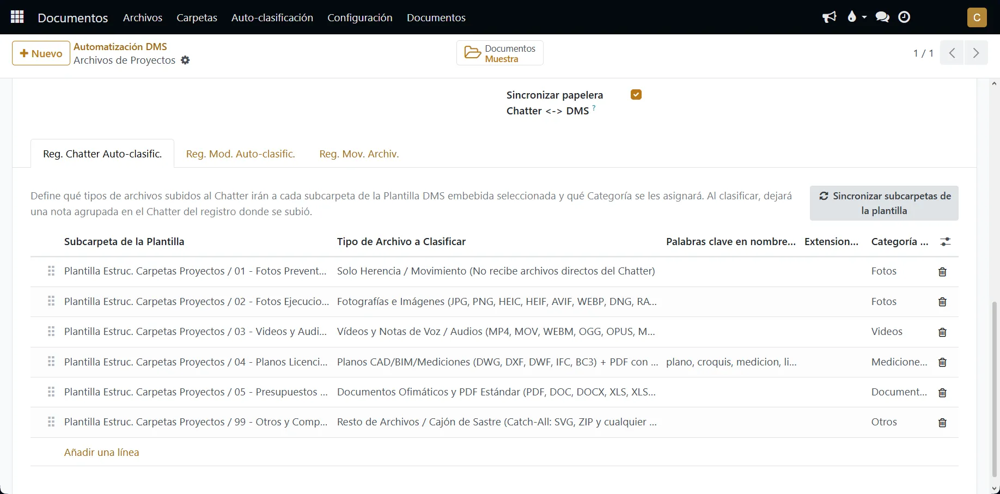
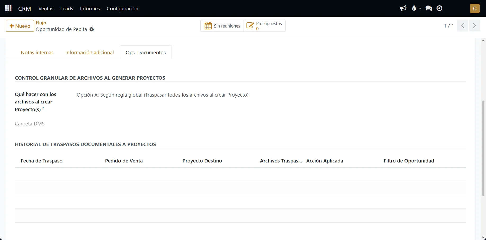

ifdw_dms_automation_workflow · v18.0.4.0.0
Elimina el caos documental y la fricción operativa en tu empresa conectando de forma transparente el
Chatter de Odoo con el motor OCA DMS.
Tus equipos comerciales, técnicos y operarios solo tienen que adjuntar fotos, vídeos, notas de voz, planos CAD/DWG o presupuestos desde el clip
📎
de cualquier registro: el módulo clona estructuras de carpetas automáticamente, filtra firmas basura de correo, renombra los archivos con truncado seguro, los clasifica en su subcarpeta exacta y gobierna el traspaso en espejo entre flujos encadenados
(CRM ➔ Ventas ➔ Proyectos ➔ Administración).
Auto-clasificación por MIME/extensión real (JPG, HEIC, MP4, OGG, DWG, DXF, BC3, PDF) y modelos satélite sin salir de la tarea u oportunidad.
Espejo bidireccional con canales independientes de Entrada y Salida y pestaña Ops. Documentos en CRM para segundos proyectos.
Aislamiento de papelera por almacenamiento físico, respeto absoluto al bloqueo nativo del DMS y trazabilidad completa en Chatter.
Recorrido por las Vistas Principales: A continuación se muestran las 4 capturas principales del centro de gobierno en
Documentos > Configuración > Organizar > Automatización DMS. Además de estas pantallas, el motor actúa de forma transparente en los formularios, Smart Buttons y Chatters de CRM, Ventas, Proyectos, Tareas y Explorador DMS.
Al elegir una Plantilla DMS embebida, la regla hereda automáticamente su Almacenamiento físico (Filestore), Modelo, Grupos de acceso y Carpeta Raíz del Molde. Permite configurar el clonado automático por filtro de dominio, vista previa del Smart Button Documentos, 7 formatos de auto-renombrado (con truncado KISS a 180 caracteres), filtro anti-firmas de correo (1 KB a 100 KB) y sincronización de borrado.


En la Pestaña 1 se mapea cada subcarpeta del molde con el tipo de archivo (Fotos, Vídeos/Audios, Planos CAD/BIM/BC3 + PDF con palabras clave, Documentos, Comprimidos o Catch-All) y su Categoría DMS.
En la Pestaña 2 (Reg. Mod. Auto-clasific.) se mapea el comportamiento de clasificación automática desde modelos secundarios que puedan tener que intervenir en el proceso de trabajo de la empresa. Ejemplo de ellos, es que mapeemos el modelo de "Tareas" si estamos mapeando el modelo de "Proyectos" de manera principal.

Al guardar el Canal de Salida en la regla de origen, se sincroniza automáticamente el Canal de Entrada en la regla de destino (y viceversa). Al separar internamente los canales de Entrada y Salida, una regla intermedia (ej. Proyectos) puede recibir archivos desde CRM y a la vez enviarlos hacia Administración en flujos encadenados A ➔ B ➔ C sin que sus mapeos se sobrescriban.

Diseñado bajo el estándar de ingeniería de Infinity Draw para ofrecer máxima resiliencia, trazabilidad y simplicidad operativa.
Evalúa con máxima prioridad las extensiones técnicas (.dwg, .dxf, .dwf, .ifc, .bc3 y planos en .pdf por palabras clave) evitando falsos positivos por MIME (image/vnd.dwg). Protege siempre los archivos .svg frente al filtro anti-firmas.
Control granular para segundos proyectos o ampliaciones desde una misma Oportunidad: permite traspasar todos los archivos (Opción A), solo archivos nuevos no enviados a proyectos anteriores (Opción B) o crear carpeta limpia (Opción C), registrando un historial completo de traspasos.
Eliminar un adjunto desde el Chatter del CRM solo lo borra del Almacenamiento de CRM, manteniendo intactas las copias ya traspasadas al Almacenamiento de Proyectos. Cualquier archivo con candado activo (Bloquear 🔒) en el DMS queda blindado frente a borrados.
Formatos configurables con fecha/hora, tarea/origen, usuario, numeración secuencial de 3 dígitos ([001]-[NombreOriginal]) o nombre original, con truncado seguro a 180 caracteres preservando la extensión para evitar desbordamientos de 255 bytes en Linux y PostgreSQL.
Activa el operador jerárquico child_of únicamente en Documentos > Archivos y en los Smart Buttons Documentos, manteniendo el explorador en árbol Documentos > Documentos completamente limpio y sin archivos duplicados en la raíz.
Publica una única nota interna agrupada por subida detallando usuario, nombre original, nuevo nombre DMS y subcarpeta de destino, ignorando automáticamente los PDFs autogenerados por informes de Odoo.
Respuestas directas sobre la operativa diaria y el comportamiento técnico del módulo.
📎) del Chatter en Oportunidades, Presupuestos, Proyectos o Tareas (desde móvil o PC). El módulo intercepta el adjunto, crea la carpeta si aún no existía, lo renombra y lo archiva en su subcarpeta exacta.
🔒) en el DMS está protegido frente a borrados.
plano, croquis, medicion, licencia). Si un archivo .pdf contiene alguna de esas palabras en su nombre, se clasifica con prioridad en la subcarpeta de Planos; el resto de PDFs van a Documentos Ofimáticos.
Construido siguiendo los estándares de Odoo 18 Community y apoyado sobre los módulos oficiales de la OCA:
base, mail (Núcleo y Chatter de Odoo 18)crm, sale_management, project, sale_projectdms (OCA Document Management System)dms_field (OCA Embedded DMS Templates)i18n/): Español (nativo) e Inglés completo (en.po + plantilla .pot con las 176 cadenas del módulo).readme/): Incluye DESCRIPTION.md, CONFIGURE.md, CONTRIBUTORS.md y ROADMAP.md.client_max_body_size 100M; en Nginx para vídeos y planos pesados.Copyright © 2026 Infinity Draw (https://infinitydraw.es). Distribuido bajo los términos de la licencia LGPL-3.0 or later en consonancia con los estándares oficiales de la comunidad Odoo y la OCA.
SI PUEDES IMAGINARLO, PUEDES CREARLO · CREAMOS ECOSISTEMAS QUE CONVIERTEN
Transformamos ideas y negocios en estructuras digitales sostenibles, automatizadas y rentables. El software se adapta a tu empresa, nunca al revés.
Consultoría de negocio, despliegue de Odoo Community, creación de módulos a medida, migración de sistemas legacy y adaptación exacta a tus flujos de trabajo.
Diseño y administración de servidores Cloud y On-Premise bajo filosofía Zero Trust, proxys inversos, contenedores, copias de seguridad inmutables y alta disponibilidad.
Orquestación de flujos empresariales con n8n, chatbots multicanal e integraciones avanzadas con WhatsApp y APIs pensado para el mundo real de la empresa, no para un laboratorio de investigación.
Creación de páginas web corporativas, landing pages y tiendas online optimizadas para la conversión en menos de 3 clics y conectadas en tiempo real a tu CRM.
Construcción integral de identidad corporativa, manuales de marca, diseño gráfico publicitario, edición de vídeo profesional y fotografía de producto.
Estrategias de captación B2B/B2C basadas en datos reales, posicionamiento orgánico, campañas en Google/Meta Ads, neuromarketing, copywriting y gestión de redes.
© 2026 Infinity Draw · infinitydraw.es · contacta@infinitydraw.es · +34 615 678 617